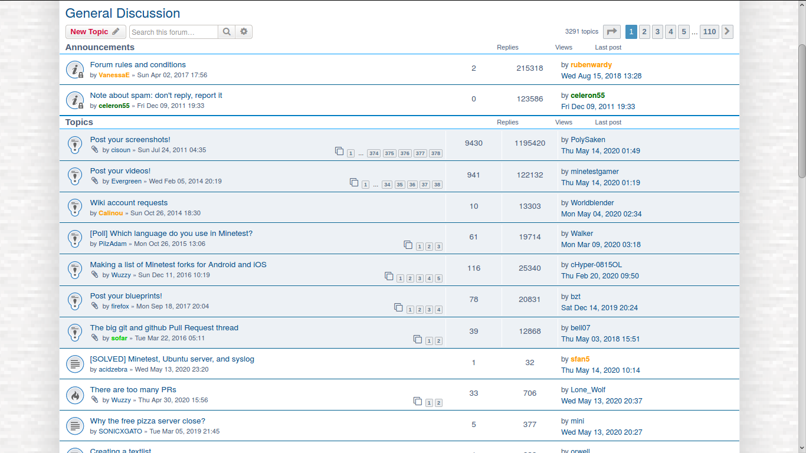

A glimpse is not a full picture and the comments decided otherwise
Love Island and the World Cup produced millions of viewers who went on to investigate strangers.
FILED 23 JUL 2026 · 69d ago·Due back 22 AUG 2026·BY 360I

A forum thread. The entry is about a glimpse being mistaken for access, which is what a forum thread is. · AirSThib · CC BY-SA 4.0
Here is the whole mechanism in one summer: visibility got mistaken for access, and access got mistaken for entitlement. You watched a person for eight weeks. You know their tone. You do not know one thing about their life, only a version of it that producers cut down to a confessional and got paid for. If that sounds familiar to anyone who ever bought a tape because the cover looked like their week, you already know the trick.
NME on the backlash to season three. This is a fight about storytelling and everyone is using the wrong words.
This is a fight about a story and it is being fought with the vocabulary of a parasocial grievance, which is why it is so ugly. When a character does something you hate, a well-adjusted viewer says the writing was bad. A parasocial viewer says you did this to me. Both are in that thread and the gap between them is the whole argument.